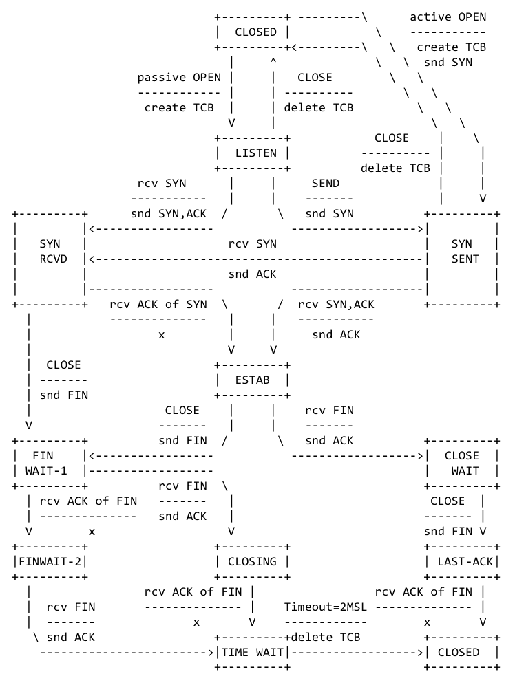
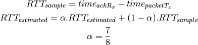

TCP is connection oriented, providing reliability, flow control and congestion control.
Congestion control will be covered in the next lecture.
This is process-to-process communication, for example host-to-host (or more precisely interface-to-interface). This allow multiplexing between the applications running on each host.
There are two main protocols UDP (RFC 768) which uses best effort, unordered datagrams and TCP (RFC 793) which offers reliable, ordered byte-streams with the respect to the process and not the host.
Port numbers provide multiplexing of the hosts’ network connection between processes. A 5-tuple can uniquely identify a traffic flow on the internet:
(source IP, destination IP, source Port, destination Port, Protocol)
The destination port can often identify a service.
There is a 16 bit number space for protocols:
User Datagram Protocol or UDP is about the simplest possible transport protocol. It provides a simple datagram over IP’s packets including a datagram checksum and port numbers.
The checksum gives processes some reliability, for example if you receive some data, it was (probably) intended fro you and was (probably) transmitted correctly.
Ports enable multiple processes per host to use IP networking simultaneously.
...
Transmission Control Protocol or TCP is reliable, it will retransmit data if it gets lost. It is ordered, data is guaranteed to arrive in the order it was sent. It is also a byte-stream, there is no need for the application to segment the data itself (although it can be common to insert delimiters).
However a network is asynchronous, which means there is no indication or guarantee of delivery. We need to use timers to infer loss but the real job is to determine what the timers should be.
“TCP implementations will follow a general principle of robustness: be conservative in what you do, be liberal in what you accept from others.” (RFC 793)
This is followed in most of the good internet protocols, although consider the trade-off between robustness and enforcing upgradability/evolution.
...
Connections can be quite complex, because a bidirectional connection must be setup. Transitions through the different states are achieved by API calls (sockets), packets and timer expiries.
Typically there are three phases: connecting, established and closing.
The first step in any communication is to setup a connection. This is accomplished via a 3-way handshake:
The minimum required for both parties is to agree a connection has been setup and data can be sent with the final ACK.
Connections are bidirectional meaning data can flow both ways.
...
...
Basically this means retransmitting data when it is lost, but there are three problems:
You can detect loss via byte-stream sequence numbers:
But how long should we wait to retransmit a packet. This length of time is called a retransmit time out or RTO. This time is bust first account for the time it would take to send a packet to the receiver and get it back again, since this is the fastest possible round trip time (or RTT).

...
How to avoid loss in the receiver. The Rx host needs to put data somewhere. It’s likely to be busy in an OS scheduling sense and buffer management is required for connection.
To stop the buffer overflowing and packets having to be dropped the receiver (Rx) advertises a window size. So a window size of 5 would be saying I can accept another 5 packets in my buffer.
This advertisement enables Tx to avoid sending so much that Rx will be forced to drop it, wasting network (and Tx host) resources, and avoiding network induced loss in congestion control.
Connection state is managed by the Transmission Control Block or TCB, each containing state used to mange the connection.
...